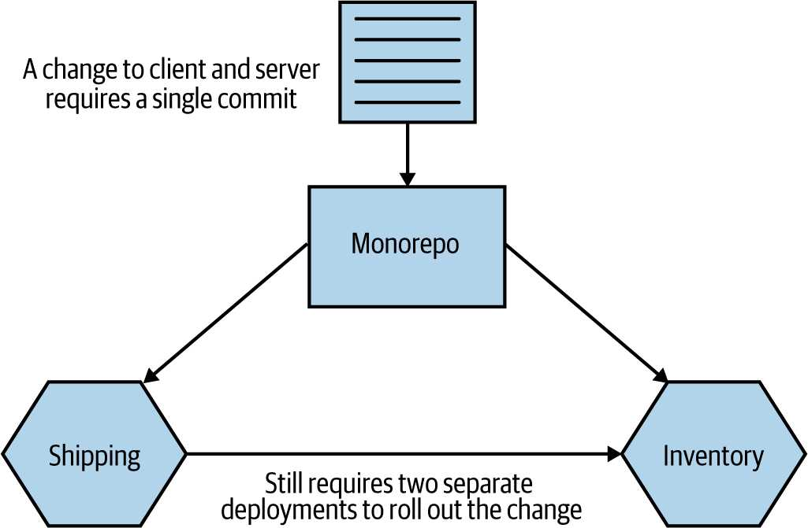

بهترین نمونه شناخته شده از یک شرکت که از رویکرد monorepo استفاده می کند، اگرچه بسیار دورتر از تنها مورد است. اگرچه مزایای دیگری برای این رویکرد وجود دارد، مانند بهبود دید کد دیگران، توانایی استفاده مجدد از کد به راحتی و ایجاد تغییراتی که بر چندین پروژه مختلف تأثیر می گذارد، اغلب به عنوان دلیل اصلی برای اتخاذ این الگو ذکر شده است.
اگر مثالی را که اخیراً مورد بحث قرار دادیم در نظر بگیریم، که در آن می خواهیم تغییری در Inventory ایجاد کنیم تا رفتار جدیدی را ارائه دهد و همچنین سرویس Shipping را به روز کنیم برای استفاده از این عملکرد جدیدی که ما ارائه کرده ایم، سپس این تغییرات می توانند در یک commit واحد ایجاد شود، همانطور که در شکل 7-9 می بینیم.
شکل 7-9. استفاده از یک commit واحد برای ایجاد تغییرات در دو microservice با استفاده از یک monorepo
البته، مانند الگوی multirepo که قبلاً مورد بحث قرار گرفت، ما هنوز هم باید با سمت استقرار این کار کنیم. ما احتمالاً باید به دقت ترتیب استقرار را در نظر بگیریم اگر می خواهیم از استقرار lockstep اجتناب کنیم.
توانایی ایجاد یک commit اتمی در چندین سرویس به شما rollout اتمی نمی دهد. اگر متوجه شدید که می خواهید کد را در چندین سرویس به طور همزمان تغییر دهید و آن را به تولید در یک زمان، این اصل اصلی را نقض می کند استقرار مستقل برای اطلاعات بیشتر در این مورد، به "DRY و خطرات استفاده مجدد از کد در دنیای Microservice" در صفحه 154 مراجعه کنید.
نقشه برداری کد منبع و Build ها به Microservice ها | 211